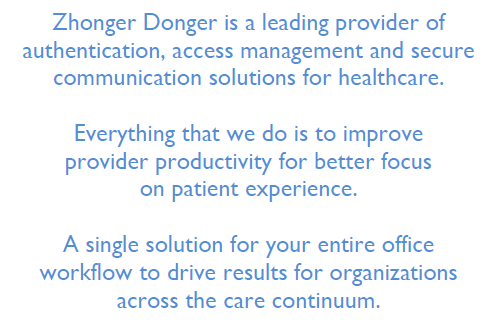

This is Zhonger Donger Health IT Solutions, a company known for our terrific phishing and unethical programs that can not only sell your private and priceless protected health information, but we can also sell your rights onto the dark webs as soon as you enter your email into the box above! From here on out, as soon as you enter your information into the information request form, you have waived all rights to what little form of internet security you had left! So thanks for that!
With an award-winning electronic health record (EHR), Zhonger Donger gives providers greater control so they can focus on what they do best by ruining your lives. In addition, providers get paid more, faster, with less work without disrupting the workflow in patient-centered care simply by referring you to this website as well! Proprietary clinical intelligence from the most trusted mobile medical reference is embedded inside our EHR workflow so it doesn't disrupt the physician's workflow, instead it disrupts yours!